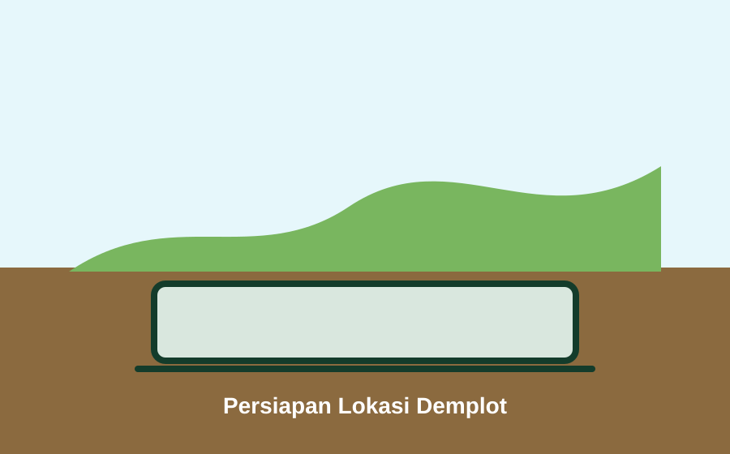
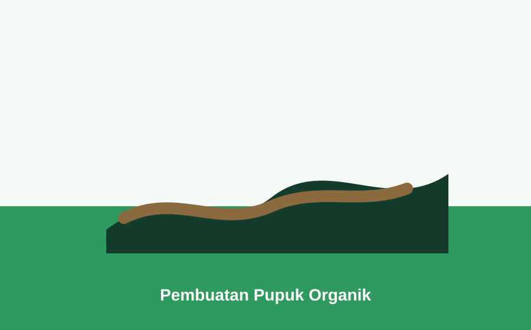
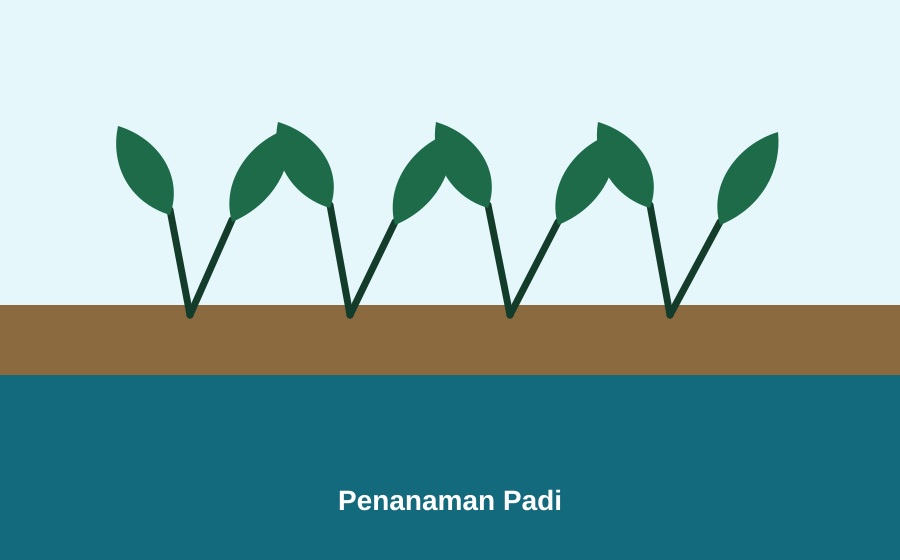
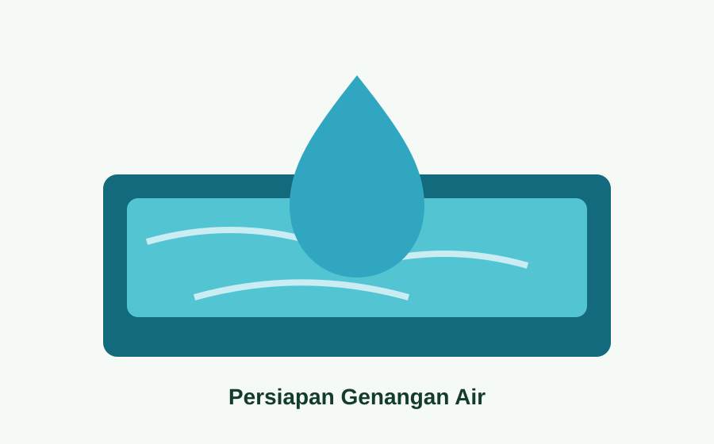
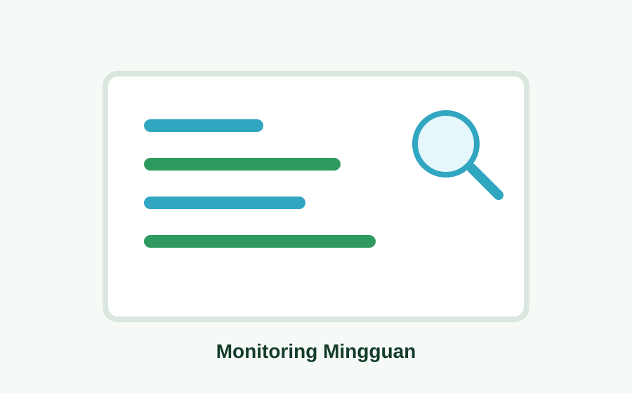

Persiapan Lokasi Demplot
Pembersihan area, pengukuran lahan, dan penentuan titik media tanam untuk percobaan padi hidroganik.
Dokumentasi Kegiatan
Timeline ini menggunakan data dummy. Ganti tanggal, deskripsi, dan gambar sesuai kegiatan asli di lokasi KKN.

Pembersihan area, pengukuran lahan, dan penentuan titik media tanam untuk percobaan padi hidroganik.

Pengumpulan rumput, pencacahan bahan, dan pencampuran bahan organik untuk mendukung nutrisi tanaman.

Bibit padi dipindahkan ke media tanam hidroganik dengan jarak tanam yang disesuaikan dengan ukuran demplot.

Pengisian dan pengecekan air di bawah media tanam agar lingkungan tetap mendukung pertumbuhan padi dan belut.

Belut ditebar secara bertahap setelah kondisi air dianggap siap dan area demplot sudah stabil.

Pencatatan tinggi tanaman, jumlah daun, kondisi air, serta jumlah belut hidup dan mati sebagai bahan evaluasi.